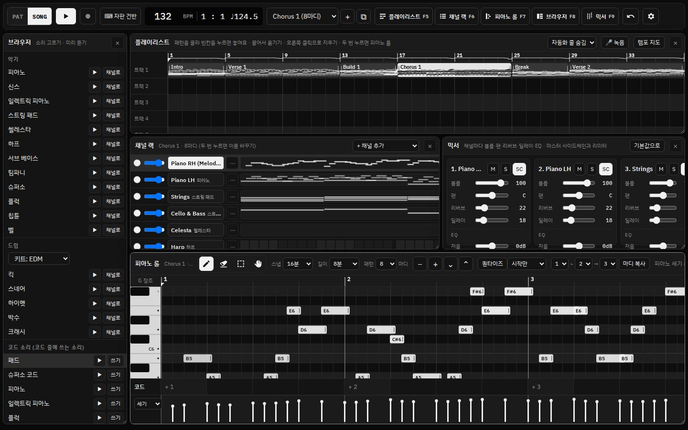
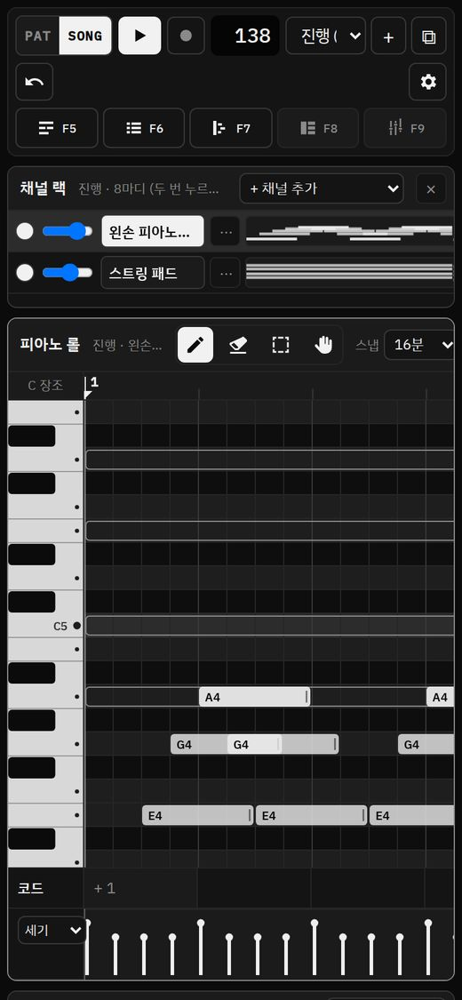
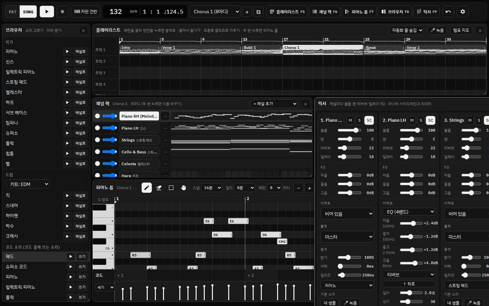
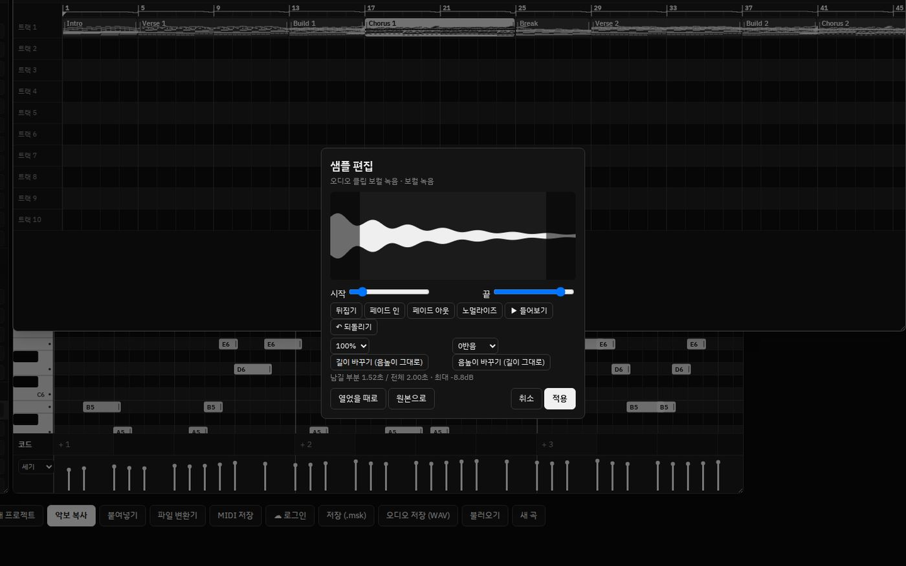
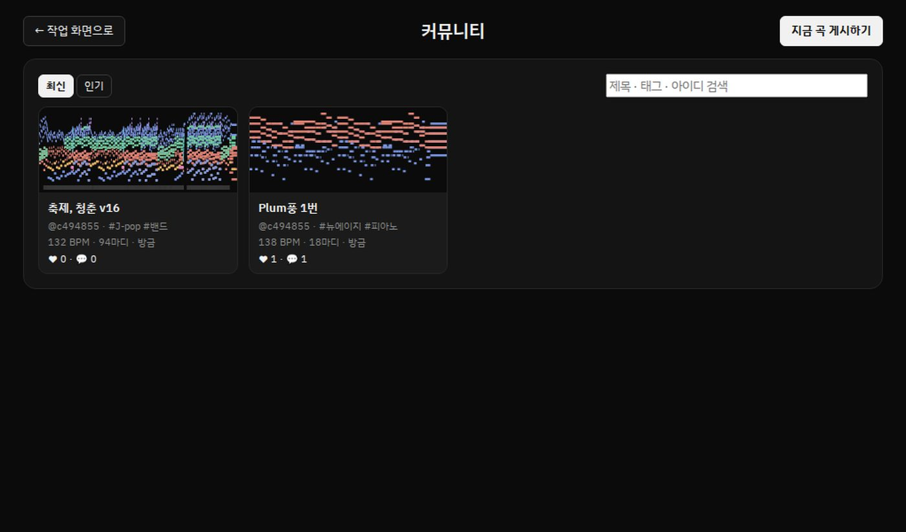
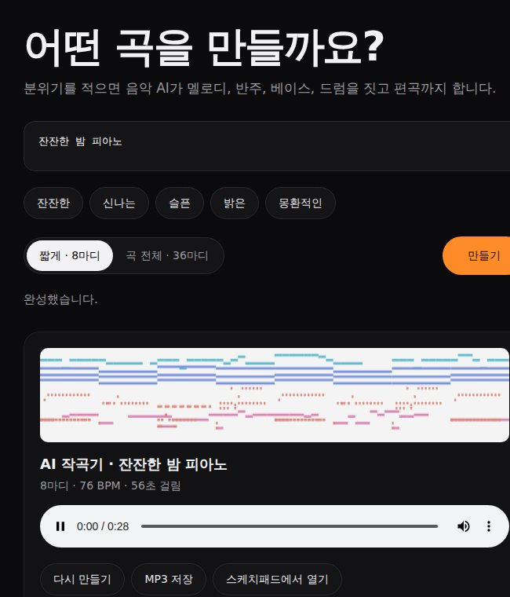

음악 AI
"잔잔한 밤 피아노"처럼 적으면 멜로디, 반주, 드럼, 코드를 갖춘 패턴이 만들어집니다. 쓰던 멜로디 이어 쓰기와 코드 추천까지.


"신나는 여름 축제, 드럼" 한 줄로 음악 AI 2가 만든 36마디입니다. 멜로디부터 반주, 베이스, 드럼, 편곡까지 사람의 손을 거치지 않았습니다.
하나의 화면에서 끝까지. 패턴을 만들고, 플레이리스트에 배치하고, 믹서에서 다듬고, WAV와 MP3로 내보냅니다. 템포가 97번 바뀌는 곡도 모든 음이 3.5ms 이내로 맞습니다.
"잔잔한 밤 피아노"처럼 적으면 멜로디, 반주, 드럼, 코드를 갖춘 패턴이 만들어집니다. 쓰던 멜로디 이어 쓰기와 코드 추천까지.
설치 없이 브라우저에서. 휴대폰과 태블릿에서도 열립니다.

FM과 웨이브테이블 신스, 세기 3층 피아노, 이펙트 11가지와 자동화.

MIDI 건반, 자판, 마이크로 녹음하고 파형을 보며 자르고 늘립니다.

곡을 올리고, 다른 사람의 곡을 듣고, 복사본을 열어 살펴봅니다. 계정 하나로 웹과 앱의 곡이 이어집니다.

스케치패드 AI 작곡기는 분위기를 적고 버튼 하나를 누르면 곡을 완성합니다. 피아노 롤도 믹서도 필요 없습니다. 마음에 들면 MP3로 저장하거나 스케치패드에서 이어서 다듬습니다.

무료
웹에서 바로. 작곡의 기본.
웹에서 시작₩49,000
웹과 Windows 앱. 거의 모든 기능.
출시 예정₩89,000
모든 편집 기능과 무제한 AI.
출시 예정₩119,000
더 많이 저장하고, 모든 것을 포함.
출시 예정| SE | 6 | 6 Pro | 6 Max | |
|---|---|---|---|---|
| Windows 앱 | – | ● | ● | ● |
| 채널 | 8 | 16 | 16 | 16 |
| 신스 · 샘플러 | – | ● | ● | ● |
| 보컬 녹음 + 음정 보정 | – | 자동 | 곡선 편집 | 곡선 편집 |
| 음악 AI 2 | 하루 3번 | 하루 30번 | 무제한 | 무제한 |
| 스템 · 버스 · 샘플 늘이기 | – | – | ● | ● |
| 계정 곡 저장 | 3곡 | 50곡 | 500곡 | 무제한 |
| 설치할 수 있는 PC | – | 1대 | 2대 | 3대 |
| 가족 앱 | 플레이어 | + 튜너 | + AI 작곡기 | 전부 |
스케치패드 6을 사면 6은 물론 7과 8도 추가 비용 없이 받습니다. 그다음 세대부터는 30% 할인된 가격으로 업그레이드합니다.
하나만 필요할 때를 위한 작은 앱들입니다. 스케치패드 6 시리즈에는 모델에 따라 함께 들어 있습니다.
곡을 듣고, 링크로 나눕니다.
무료노래를 녹음하면 음정을 맞춰 줍니다.
₩9,900 · 6 이상 포함한 줄로 곡 한 곡을 만듭니다.
₩19,900 · 6 Pro 이상 포함나만의 소리를 만들고 연주합니다.
₩14,900 · 6 Max 포함네. 웹의 SE는 계속 무료이고 광고도 없습니다. 지금 내려받은 5.x도 계속 쓸 수 있습니다. 6 시리즈의 새 기능과 Windows 앱 6은 유료입니다.
산 세대와 다음 두 세대까지 무료입니다. 6을 사면 6, 7, 8을 받고, 9부터는 30% 할인된 가격으로 업그레이드할 수 있습니다.
편집 기능과 음악 AI는 같습니다. 6 Max는 계정 곡 저장이 무제한이고, PC 3대에 설치할 수 있으며, 사운드 팩과 가족 앱이 모두 들어 있습니다.
한 번 연 뒤에는 곡 편집과 재생에 인터넷이 필요 없습니다. 피아노 소리와 음악 AI 모델은 처음 한 번만 내려받으며, 계정과 커뮤니티는 인터넷 연결이 필요합니다.
기본적으로 내 브라우저(또는 앱) 안에 저장됩니다. 로그인하면 서버의 내 계정에도 올릴 수 있고, 언제든 .msk, MIDI, WAV로 내려받을 수 있습니다.
현재는 Windows 앱만 제공합니다. 맥에서는 웹 버전을 사용하면 되고, 기능은 같습니다.
FL Studio 프로젝트(.flp)는 직접 열 수 없습니다. FL Studio에서 MIDI로 내보낸 뒤 열면 음과 템포를 가져올 수 있습니다.